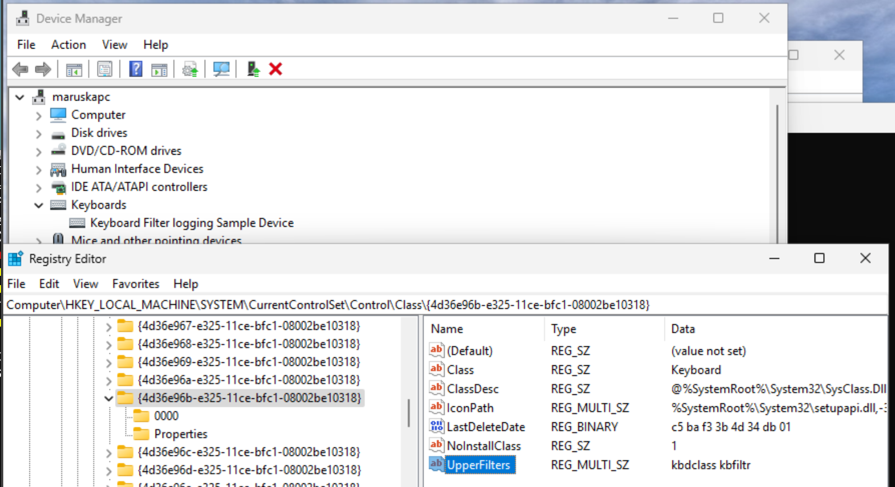

2024-11-11
After 20 years of developing a "forking" keyboard driver for Xfree86/Xorg, I decided to finally attempt to make it available on Windows.
As a first step I split the code into portable core, and the interfacing code for Xorg. In a couple of days I implemented such an adapter for the "libinput" to be used in Weston (Wayland).
Encouraged by the easy adapter (for libinput), I started to assemble the available tools for Windows:
Requirements for 3. included public IP for the guest VM (ping should be possible).
virt-install --name win11 --cdrom Win11_24H2_EnglishInternational_x64.iso
virt-viewer win11
Installing VS was easy, and included a misleadingly named "wdk-extension" which did not include WDK itself. So ntddk.h header was missing during the first builds. Installing WDK properly solved that.
Regarding preparation ... just re-read and execute correctly the steps.
I didn't install any SDK or VStudio on the target PC! Only the WDK.
For "non-enhanced mode" ....I didn't do anything with my KVM/Qemu setup.
WDK Test Target Setup MSI ... indeed provided by WDK. (If by chance you install SDK, you will find other MSI files but those are irrelevant.)
Provisioning made inside VS (on the host) ... sometimes fails. Repeating can fix it.
This create the WDKRemoteUser account (on the target) and logs as it. On one physical machine I couldn't login as it has an unknown password.
I started to try-out Sample drivers. In particular the kbfilter. Deploy failed.
The message is the same in both "Cannot create a stable subkey under a volatile parent key". Other failures could be present too.
So re-read the Readme and the INF file template
I didn't see any
WdfCoinstaller010xx.dll The coinstaller for version 1.xx of KMDF.
Using MSBuild ... does work, but does not help with the deployment.
So, while searching for solutions of the aforementioned issues I learned:
dbgview seems similar to dmesg of linux. But it crashes sometimes (disappears). How to see messages during the boot? To see kernel message it must be run "as administrator" !
devcon tool -- mysterious tool installed during the provisioning (by VS)
https://github.com/hawku/TabletDriver/issues/225
I looked at the github issues of the sample drivers -- for example:
about devcon install.
But beware .... the format while editing is ..... one item per line
"kbdclass kbfilter" .... this indeed makes it work !!!
Wrong value and you lose keyboard !!!!!
deploy (from VS). Then just "Update" the driver of the PS/2 keyboard device...
if it says "Already up-to-date" then your HW-id is wrong!!! So update the *inf with correct value.
and Registry -- irrelevant.

WdfDriverCreate was failing with 0xC000009A so disable the verification.
{kind=link}